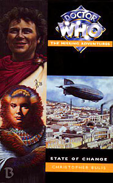

|
State of Change
|
BASIC PLOT DOCTOR Fifth (Pg 68 "The face staring up at her was that of a younger man, with thin, sensitive features and paler, straight flaxen hair.") Cameo thought processes of Doctors 5, 4 and 3 on Pg 128. The thoughts and mannerisms of the Third pop up whenever the Doctor has to fight. Pg 272 Fifth ("Brave heart, Peri..."), Fourth ("'Hello, I'm the Doctor,' he said brightly"), Third ("Oh, poor chap."), Second ("'Oh dear,' he exclaimed in a tremulous voice, 'this is all rather unsettling.'") Pg 273 and you complete the set. First Doctor ("Don't worry about me, child.") Disturbingly, at this point, the Doctor is dressed only in a loincloth (Pg 247). Pg 275 shows us brief glimpses of Doctors 2 and 3 again as we go back through the cycle. COMPANIONS MATERIALISATION CIRCUIT Pg 39 Inside Cleopatra's tomb on the Alternate Earth, 10BC (The Doctor and Peri spend 31 years in suspended animation). Pg 277 Inside the Rani's TARDIS. Pg 289 In mid-air, above Rome. Pg 290 In the middle of the arena of the Herena Maximus, Rome. By Pg 291, it's back in Cleopatra's tomb. Pg 294 In orbit around Terra Nova. PREPARATORY READING CONTINUITY REFERENCES Pg 7 "Scattered about the room was an odd mixture of furniture that, perhaps, indicated the Doctor's feelings for his favourite planet: a Sheraton chair, a Chippendale, a large Chinese pot belonging to a dynasty Peri had never heard of, and a massive brass-bound sea-chest (from which had come the vintage telescope). On a carved stand was a bust of Napoleon, whilst on its twin was an ormolu clock." The Doctor's been redecorating in the style of his first incarnation. Pg 8 Peri goes for a dip in the TARDIS swimming pool, last seen in The Invasion of Time. It's had a bit of a make-over, including a ceiling painted by Michaelangelo, apparently. Pg 12 "The TARDIS's link with the Eye of Harmony has been broken." The Deadly Assassin and see also the Telemovie. "Didn't you work out some sort of new emergency system after the last time we had power trouble?" Vengeance on Varos. Pg 13 Varos is mentioned again. Pg 42 "She found the Doctor was laboriously turning a crank handle inserted in a small socket beside the doors, which were slowly swinging open." He did the same thing when the power failed in Death to the Daleks. Pg 55 "Don't you know it feels like Vulcan has set up his forge inside my head?" Another drunkard says almost exactly this same line in the audio The Fires of Vulcan. Pg 60 "'I guess there's no doubt about it,' said Peri, 'We have definitely slipped sideways in time, into one of those parallel worlds you told me about.'" Like the one Morgaine comes from in Battlefield, a story in which the Doctor discusses things going 'sideways in time'. Pg 62 On the ladder that the Doctor gets from the TARDIS: "It even bore a well-known brand name." In true BBC style, no advertising or product placement here! Pg 67 "Fine dark feathers were growing out of her forearm. She looked at the Doctor in mute horror. [...] 'V-Varos...' she stuttered shrilly. It's Varos again.'" Indeed. Peri turns into the bird creature from Vengeance on Varos, but actually quite likes it this time, and spends most of the rest of the book that way. (It's a shame about the missing quotation mark, though.) Pg 74 "It was like this on Androzani, thought Peri dizzily, as she and the Doctor tumbled through the door of the TARDIS." The Caves of Androzani, about five minutes before the end of episode 4. "Visions of the Reshapement Chamber on Varos surged into her mind." Vengeance on Varos again. Pg 76 "Retro-regeneration. That's not something that's supposed to occur naturally. Indeed, only Time Lords of the first rank have ever tried to initiate the process deliberately." Didn't know you could do that. Maybe that's what Romana was doing in Destiny of the Daleks. Another mention of Varos. There are a few more in the book, but we all know where Varos is and what happened there, so I won't mention them again. Pgs 76-77 "Which is why one of its functions is to project what you might call a "morphic field" to protect not only its own pattern, but also those of its passengers." Morphic fields have popped up before, although used in a different way, in Lucifer Rising. The Doctor's simplifying things for Peri, here, so it's not really a problem. Pg 93 "I am Doktor of Tardis." Way back in The Curse of Peladon, Princess Jo also came from that little Greek island. (I love the fact that the Doctor describes it as 'deceptively small'.) Pg 128 "But most of all, he knew he wasn't that good with a sword. Of course, he had been... once." We saw this in The Sea Devils. Pgs 128-129 "All Paulinus knew was that, after a few wild, amateurish swings at him, a devil-may-care gleam had suddenly appeared in the stranger's eyes, and a mocking smile had sprung to his lips. Then his own sword was turned expertly aside, and it was his turn to retreat before a barrage of cuts and thrusts delivered with a poise and style he had never met before. The terrifying realization dawned that he was suddenly fighting for his life. Just to make it worse, with every other blow, the stranger would utter a loud: 'Haa!' for no apparent reason." Characterisation of the Third Doctor's fighting style, including sound effects, is spot on. The Seventh Doctor also called up the skills of the Third (albeit in a different way) in Timewyrm: Genesys. Pg 135 "First, as a precaution, you'd better take a dose of Thal anti-radiation drug from the medicine chest." Where it has presumably been since The Daleks (or possibly Destiny of the Daleks). Pg 136 The description of Peri learning to master the air currents is similar to Alcestis doing the same in Fallen Gods. Pg 139 The clockwork atomic bomb would undoubtedly amuse Dave Stone, author of Sky Pirates! Something similar appears in Warlords of Utopia, which is parodying books just such as this one. Pg 162 "We fell to our knees and peered over the edge... There was nothing but a black pit of stars beyond." And this is similar to the edge of the world in Conundrum. Pg 199 "Actually, though I did study martial arts in the East once, that particular hold was based on Venusian Karate techniques; I'm not as competent as I'd wish in the discipline, but then I haven't got the correct number of limbs." Correct in all respects. 'Karate' and 'Aikido' appear to be interchangeable terms in the programme - we first saw the practice in Inferno. We meet Venusians in Venusian Lullaby. Pg 219 "You think it an unreasonable response to what you did? Trapping me with that megalomaniac Master in my TARDIS - which you had already sabotaged." The Mark of the Rani. It's not clear here how they escaped the dinosaur, but the novelisation of Time and the Rani states that it grew so big it snapped its neck on the ceiling. Pg 229 "'You remember the Rani, don't you Peri?' 'I sure do! I almost got caught by one of her trick biological land mines. It would have metamorphosed me into a tree if I'd touched it!'" The Mark of the Rani, although quite why Peri feels the need to explain what happened to the Doctor when he was there is a little beyond me. But thinking about Luke, the tree, never fails to raise a smile. Pg 240 Peri, arranging Ptolemy's publicity using stolen money and with a staff comprised of thieves and villains is possibly a nod to modern politics on both sides of the Atlantic. Pg 275 "He crossed his fingers and activated the mass converter. Deep within the TARDIS, the shells of empty and forgotten chambers were collapsed and fed into the converter. Matter became energy." This is similar to what happens in Castrovalva. Pg 285 Vitellius is, amusingly, turned into a pot plant by the Rani, showcasing her continued interest in flora as established in The Mark of the Rani. Pg 295 On Terra Nova, Australia is upside-down, which may reference the inverted continents of The Tenth Planet or the abandoned story The Hidden Planet, but probably doesn't. OLD FRIENDS AND OLD ENEMIES NEW FRIENDS AND NEW ENEMIES Aulus Severus Glabrio, First Centurian Rufinus, Themos, Kharman the Chief Priest of Serapis, Gaius Agricola, Gladiatorial Instructor Otho, Cynon. Some may end up dead - again, it's not clear. Four comedy villains with hearts of gold: Strabo, Decius, Tiro and Cassodorus.
CONTINUITY COCK-UPS PLUGGING THE HOLES [Fan-wank theorizing of how to fix continuity cock-ups] FEATURED ALIEN RACES Iam, the single occupant of a small universe, drifting out in the Vortex. FEATURED LOCATIONS And, in a copy of a fair chunk of the planet Earth inside a stable micro-universe within a bubble of negative vortex energy: Pg 18 The sea, a Palace (in either Rome or Alexandria; it's not made clear) around 31BC. (It can't be much earlier - the ages of the characters wouldn't work) Actium, 31BC. The mouths of the Indus river, Alexander's Port and more of the Indian subcontinent to the very edge of the world, India, 23BC (Ptolemy was 24 then and is 37 now). Pg 41 The Romano-Egyptian Dominion, including Rome (including Cleopatra's tomb, a tavern, the Forum, the Royal Palaces, the Gladiatorial Barracks and the Herena Maximus), Alexandria, and an airship (the Horus) traveling between the two, 10BC. Pg 294 A newly created planet, Terra Nova, that looks almost like Earth, in orbit 94 million miles from a yellow dwarf-star in an outer spiral arm of the galaxy, uncertain time period. IN SUMMARY - Anthony Wilson |
|
 |